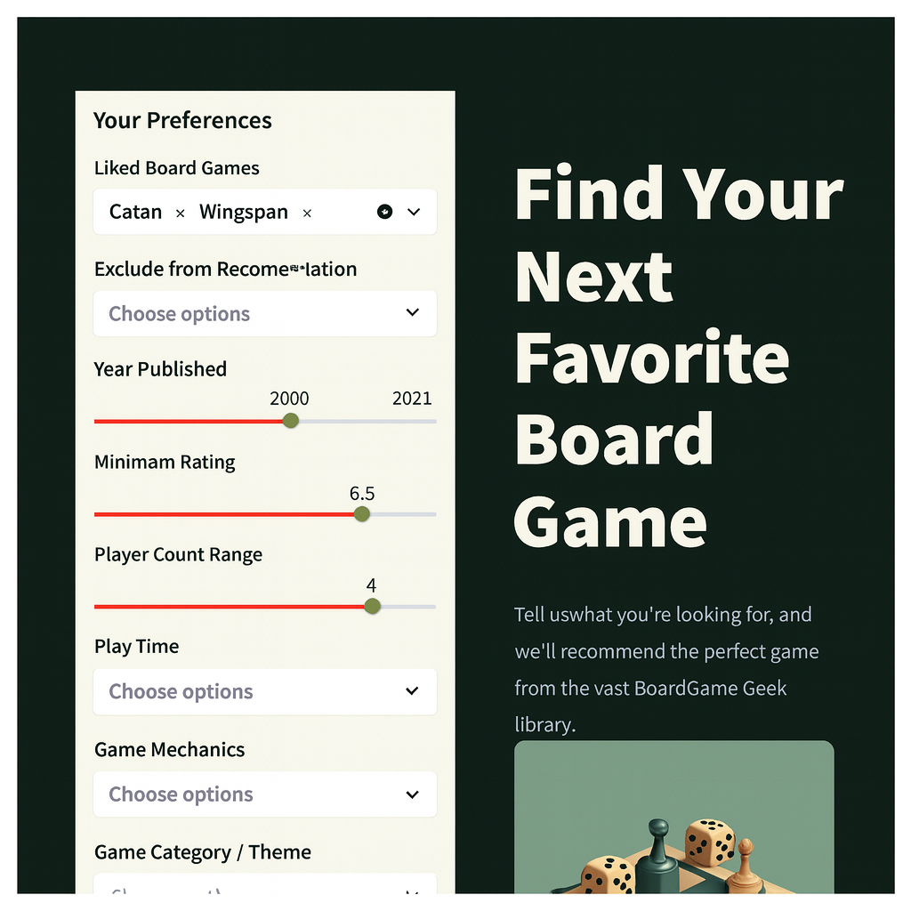
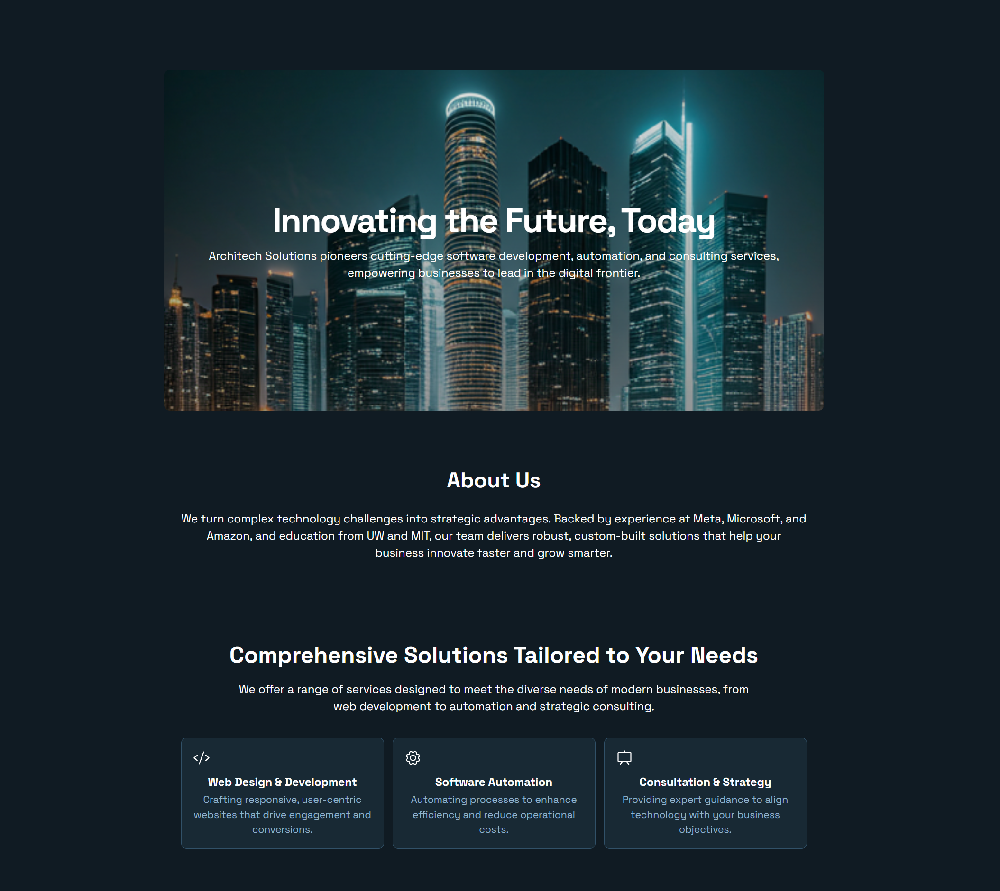

|
Chrissa da Gomez I'm a PM at Amazon and researcher at Georgia Tech with a focus in machine learning (ML) applications. Advised by Prof. David Joyner and Prof. Vijay Madisetti, my research spans several areas of applied machine learning, including sentiment analysis using a Twitter-RoBERTa model to explore how language background (native vs. non-native speakers) influences student feedback; developing lightweight datasets to train GUI navigation agents more efficiently; and investigating how different speaker embeddings affect performance in text-to-voice models. |

|
Research |
|  |
GameBuddy: LLM + Collaborative Filtering Board Game Recommender
Chrissa da Gomez Data & Visual Analytics, Georgia Tech, 2025 App / GitHub GameBuddy is a board game recommender that helps users discover great but underrated games. It combines LLM reasoning with collaborative filtering to avoid the usual bias toward bestsellers. The Streamlit app also explains why each recommendation matches your tastes and highlights hidden gems user might otherwise miss. |

|
MAGE: Modular HTML Generation Engine: A Scalable Synthetic Dataset Generation Framework for Web GUI Control
Chrissa da Gomez, Ye Mo Gu, Gyubeum Lim, Vijay Madisetti Georgia Tech, 2025 Code / PDF A scalable framework for generating large, diverse synthetic datasets for web-based GUI navigation by systematically mutating real-world HTML layouts. It enables rapid, low-cost creation of visually varied, realistic UI screens—supporting the training of language and vision-language models without the heavy rendering or manual annotation overhead of traditional methods. |
|
Using Sentiment Analysis to Investigate Peer Feedback and English Fluency in Online Graduate Computing Courses
Brittney Exline, Melanie Duffin, Brittany Harbison, Chrissa da Gomez, David Joyner ACM CompEd, 2025 project page / arXiv This study applies sentiment analysis using the Twitter-roBERTa model to over 40,000 peer feedback comments from an Georgia Tech Online CS program, revealing that non-native English speakers give more positively toned feedback and view the system more favorably, but receive slightly less positive feedback themselves. |
|
|
Impacts of Speaker Embeddings on Voice Cloning Quality
Trang Doan, Cuong Vinson Pham, Trung Pham, Chrissa da Gomez CS 7643: Deep Learning, Georgia Tech, 2025 Code / PDF This project evaluates the effects of different speaker embedding architectures—GRU, CNN, self-attention, and Transformer— on the quality of few-shot voice cloning using the VCTK dataset. While CNNs trained quickly, they overfit and struggled with voice identity retention. Attention-based models generalized better, and the Transformer encoder produced the clearest cloned voices. |
Side Projects |
|
Change AI: A Change Initiative ROI Calculator
GitHub / App Demo A web-based ROI calculator designed to help managers assess the cost and benefit of organizational change initiatives (e.g., adopting GitHub). Built for the 2025 Microsoft Hackathon using React and Azure Static Web Apps. |
|
|  |
Architech Solutions: Website for a Small Business Services Company
Website Designed and developed a responsive, modern website for Architech Solutions, a company offering web and software development services for small businesses. Focused on clean UI, mobile-first design, and optimized performance to enhance user experience and showcase the company's service offerings. |